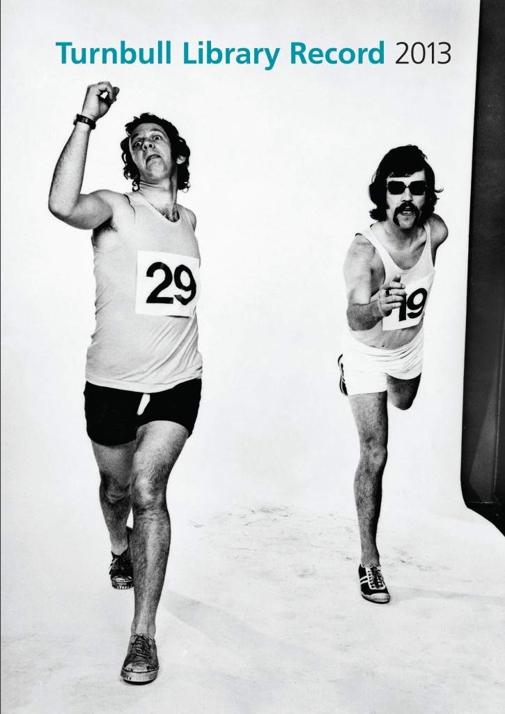

Creating a Copyright Work: Is My “Time and Effort” Enough?
BY THOMAS HUTHWAITE
Copyright is one of the more flexible forms of intellectual property. It can be used to protect almost any form of expression, whether literary, dramatic, musical, artistic, industrial, sound recording, film, communication work, or typographical arrangement.1
But from what point does an original copyright work exist? For example, the creation of a single word does not attract copyright protection. That single word does not hold enough creative effort or “originality” to be considered an original literary work.
Similarly, copying someone else’s existing work, even if showing that work in a new way, is not likely to give rise to an original work.2 A work cannot be original if it is a copy of, or an infringement of, an existing work.3 It must be independently created.
However, an original work may be created by expending sufficient skill, judgement or labour, even if that work incorporates publicly available information. This may occur, for example, where a person creates a new compilation of available information, such a new recipe or a new directory. In these examples, which require the author’s skill, judgement or labour, the level of creativity or ingenuity required for “originality” may be relatively low.4
So, if a work is not particularly creative, then how much skill, judgement or labour is required before it becomes an “original” copyright work?
A Case Study: The Dead Sea Scrolls
The Dead Sea Scrolls are ancient religious manuscripts dating back to 200 BC. Part of the Scrolls is the Miqsat Ma'ase Ha-Torah (“MMT”), a particularly sought after Hebrew document that has only been discovered in fragments.5
From 1954, professors Elisha Qimron and John Strugnell identified, transcribed, and reconstructed countless fragments from six different manuscripts containing the MMT. The professors arranged the manuscript fragments in a way they believed would most accurately represent the original MMT text. That process took 11 years and, even then, more than half the MMT was missing. The professors then filled in, or interpolated, the gaps based on their extensive knowledge and research.
The resulting ‘Qimron’ version of MMT was finally officially published in 1994. However in 1992 (before the official publication), a member of the Biblical Archaeology Society published a large part of the Qimron MMT, without the professor’s permission. He did this in order to make the MMT available to other scholars, fearing that access to it would otherwise be heavily restricted.
Qimron sued the Biblical Archaeology Society for copyright infringement, saying that his version of the MMT was unique, and an original copyright work. (Keep in mind that, at the same time, the professors claimed to have formed the most accurate complete version of the original MMT.) So, could the professors claim copyright in the fruits of their labour as “original” literary works?
The Israeli Supreme Court held that, yes, the work was an original literary work that attracted copyright protection. The professors’ work on the MMT was not purely technical or mechanical labour yielding a predetermined or known result. Instead, the “additional soul” that the professors inspired in the fragments of the Scrolls, with their labour, made them the owners of the copyright in the Qimron MMT text.
A Factual Enquiry
The Qimron case is a particularly fact-specific one, but so are most copyright cases. All of the facts must be considered, including:6
- The “starting point” of the work;
- The whole of the completed work;
- The extent of the copying and alteration (whether a substantial part of the original work survived, so as to appear to be a copy of the original work);
- The quality of the work, rather than the quantity of what has been taken;
- Whether mere literal or mechanical copying has taken place;
- Whether advantage has been taken of the original work.
After performing this enquiry, one should be left with a reasonable overall impression of whether the new work is in fact an “original” work, regardless of whether it was formed from a spark of creativity, or from the author’s blood, sweat, and tears.
Notes
- Section 14 of the Copyright Act 1994.
- Elanco Products Ltd v Mandops (agrochemical Specialists) Ltd [1980] RPC 213 (CA).
- Section 14(2) of the Copyright Act 1994. See also: University of London Press v University Tutorial Press Ltd [1916] 2 Ch 601 (EWHCCh) at 608 – 609
- University of Waikato v Benchmarking Services (2004) 8 NZBLC 101, 561 (CA).
- Eisenman & Ors v Qimron (2000) C.A. 2790/93, 2811/93.
- Steelbro NZ Ltd v Tidd Ross Ltd [2007] NZCA 486 at [109] per Wilson J.
Thomas Huthwaite is an Associate at Baldwins Intellectual Property, an intellectual property patent attorney firm. This article is intended to summarise potentially complicated legal issues, and is not intended to be a substitute for individual legal advice.
Men Playing
 "Men Playing" from the British Library. Public domain. http://www.bl.uk/catalogues/illuminatedmanuscripts/ILLUMINBig.ASP?size=big&IllID=40436&
"Men Playing" from the British Library. Public domain. http://www.bl.uk/catalogues/illuminatedmanuscripts/ILLUMINBig.ASP?size=big&IllID=40436&OER in Australia: Its Time Has Come
BY AUSTRALIAN NATIONAL COPYRIGHT UNIT
The term Open Educational Resources (OER) was coined at UNESCO’s 2002 Forum on Open Courseware. It means “teaching, learning and research materials in any medium, digital or otherwise, that reside in the public domain or have been released under an open licence that permits no-cost access, use, adaptation and redistribution by others with no or limited restrictions”.
OER initiatives are emerging at an increasing rate throughout Australia, both at the government and institutional levels. Unlike NZ, where OER is being implemented organically at a school level with the assistance of Creative Commons Aotearoa New Zealand (CCANZ), OER in Australia is being implemented by governments and educational bodies as part of the Australian Government Open Licensing Programme, AusGOAL.
The National Copyright Unit (NCU) is the new Education Lead of Creative Commons Australia, and for many years has been an active advocate of Creative Commons and the OER movement. NCU negotiates and manages the compulsory and voluntary copyright licences on behalf of the Australian School and Technical and Further Education (TAFE) sectors, and advocates for copyright law reform on behalf of the School and TAFE sectors. NCU also provides copyright advice and education to the School and TAFE sectors.
In its role as Creative Commons Education Lead, NCU also runs an education programme on Creative Commons licences and the use and adoption of OERs for the School and TAFE sectors.
Increasing recognition of value and benefits of OER
The Australian Government and education administering bodies now recognise that OER policies can impact and assist on a range of copyright compliance and education policy issues.
OER will assist in managing costs, both copyright licensing costs and traditional learning material costs:
- OER can make an important contribution to the most pressing problem facing education systems around the world: delivering better results with fewer resources.
- Free or inexpensive resources licensed under an open licence should be an option considered by teaching organisations.
- Using OER will also reduce copyright licensing costs. Despite best efforts by the Copyright Advisory Group (CAG) and NCU, copying volumes continue to go up and exclusions are varying from year to year.
OER will deliver greater learning efficiency, especially in regards to digital ICT policies:
- Educators are able to easily use the work of others and build upon those as needed, as opposed to starting from scratch;
- When educators leave a role, both the school and the educator are still entitled to use the resources the educator created;
- OER allows greater collaboration between education department and authorities, domestically and internationally;
- OER encourages the use of new digital technologies and allows collaboration between students, parents, teachers and schools; thus allowing schools to reach their State/Territory’s digital ICT policy goals.
OER helps manage copyright compliance:
- OER removes many of the roadblocks associated with traditional copyright and reduces copyright compliance issues and costs.
- It promotes continuous improvement of instruction and personalised learning.
Recently all the Australian Departments of Education agreed to license their websites and publications under a Creative Commons Attribution licence (CC BY 4.0) where possible. Tasmania, South Australia and Queensland Departments of Education have done so and the other states/territories are in the process of implementation. The non-government school sectors are beginning to license their learning resources under Creative Commons licences as well, to ensure wider sharing and building of knowledge.
Other OER initiatives in Australia include Education Services Australia licensing more than 1,600 digital learning resources from the national digital resources collection under Creative Commons licences (with hopefully many more to come). These CC-licensed resources are available from Scootle. The Australian Curriculum is also licensed under a Creative Commons Attribution-NonCommercial-ShareAlike (CC BY-NC-SA) licence in order to ensure that the curriculum is widely accessible to teachers and schools, and to facilitate the development of teaching and learning resources. NCU expects to see more and more publicly funded educational resources licensed under Creative Commons licences.
OER Toolkit for Schools Curriculum Developers
The NCU is developing an OER toolkit for School-sector E-learning and Curriculum Developers. The toolkit is a practical guide designed to support curriculum creators in understanding and making use of open educational materials, and ensuring future materials are able to be openly licensed. It provides detailed information on Creative Commons licences and how to use them. Importantly, we have developed a ‘best of’ OER list to assist people in finding high-quality OERs quickly. And, in the true spirit of the OER movement, NCU’s toolkit is built on the fantastic CC-licensed works of CCANZ’s publication “Free to Mix” , the Leiscester City Council “OER Guidance for Schools”, and the ‘OER Copyright and Licensing Toolkit’ by the South African Institute for Distance Education.
Copyright 4 Educators on Peer 2 Peer University
The NCU is one of the foundational courses of P2PU School Open, and has run the Copyright 4 Educators course through Peer 2 Peer University (P2PU) since 2009. P2PU is a grassroots open education project that organises learning outside of institutional walls and gives learners recognition for their achievements.
Copyright 4 Educators has one week dedicated to OER and Creative Commons licences. This course is run online, twice a year with an intake of approximately 60 learners. The course is unbelievably popular. Enrolments for the course usually fills within 48 hours and has, on average, a wait list of 70 people! The average retention rate for the seven-week course is 87% over the past two years. The NCU is looking to run an entire course dedicated to OER in the future.
Why Open Education Resources are good for Australian schools, teachers and students
In Australia, the current collective copyright licence schemes and free-use exceptions for educational uses by teachers and schools are expensive, restrictive and complicated. Educators’ valuable time is spent trying to understand complex copyright rules and seeking permission to use educational resources.
Australian schools pay over $665 million to purchase educational resources each year. These resources cannot be modified, shared or remixed by teachers and students except in very limited circumstances.
Another big problem is that many teachers believe that they are allowed to use material from the internet for free in their classes and at their school. This is not the case. Teachers downloading, saving, printing or emailing pages from the internet will attract fees payable under the education statutory licence for schools. Generally the only material that is free for teachers and schools to use from the internet is online material that is licensed under Creative Commons.
Currently, Australian schools pay approximately $90 million a year to copyright collecting societies. On the other hand, OER can provide the following benefits:
- Safer: It is much safer for teachers to use OERs, as they are free to reuse, remix, redistribute and adapt without running the risk of breaching the complex copyright exceptions and copyright licence rules.
- Internet compatible: It is better adapted to the internet and the freedom that provides to copy, distribute, adapt and remix resources.
- Enabler: Resources that are free to access are not necessarily free to reuse, remix or adapt. There are many online sources of information that can be freely accessed but often the right to adapt or remix is reserved to the copyright owner. Embedding third-party content in educational resources also prevents that content from being shared and copied without permission of the copyright owner. OER enables educators to reuse, remix and adapt resources, since the copyright owner has already given permission to everyone.
- Accessible: It is easy to access openly licensed materials, with over 800 million CC-licensed works and many searchable online databases of CC-licensed work available.
- Collaborative: It encourages collaboration between educators and creates communities based on the sharing of educational resources, which can increase the quality of materials and the development of ideas.
- Cheaper: It helps to save money on national copyright fees and the administrative costs of seeking permission, and allows educational resources to be shared freely online with very low transaction costs.
- Equitable: It offers equal access to knowledge for everyone and allows for educational resources to be adapted for minorities and those with disabilities.
Schools using Creative Commons
OER is also being adopted at the local, school level. Teachers and students are increasingly using OER to eliminate copyright concerns and bypass the complex copyright rules. OER allows for significantly more engagement with materials than the Australian educational copyright licences and exceptions allow, and enables educators to fully use, adapt and share resources with their school community and the world at large.
For all the above reasons, OER is best suited for the modern-day classroom. And, due to this, it is being picked up daily by different schools, teachers and students.
One such school, Carina State School, a primary school in Brisbane, Queensland, recently held its first carnival in 16 years, and it also set a new standard for Australian schools by being an exemplar Creative Commons Community.
 Carina State School Carnival Art Gallery, 20 June 2015. Photo by Baden Appleyard. CC BY-NC
Carina State School Carnival Art Gallery, 20 June 2015. Photo by Baden Appleyard. CC BY-NC
The school held an amazing School Carnival Art Gallery in which Creative Commons licences were applied to all of the student works. Creative Commons music was played in the gallery, which avoided any additional costs or copyright concerns, and the school has plans to use Creative Commons licences in future activities.
 Carina State School Carnival Art Gallery, 20 June 2015. Photo by Baden Appleyard. CC BY-NC
Carina State School Carnival Art Gallery, 20 June 2015. Photo by Baden Appleyard. CC BY-NC
The school has taken a proactive approach to copyright by using the Creative Commons licences, and has introduced them to their students in a fun, creative and practical way, in the first event of its kind in Australia!
 Carina State School Carnival Art Gallery, 20 June 2015. Photo by Baden Appleyard. CC BY-NC
Carina State School Carnival Art Gallery, 20 June 2015. Photo by Baden Appleyard. CC BY-NC
The take-home message for the school, students, parents and all that attended the Carnival was that Creative Commons licences work! They’re a simple way to overcome copyright concerns and allow for greater dissemination and sharing of artwork, culture and information generally.
The National Copyright Unit of the Australian Government's Education Council advises and represents Australian schools and TAFEs on copyright issues, negotiates copyright licences for the sector and liaises with education, industry and government on copyright policy issues. The NCU is the Education lead of CC Australia and manages the ‘Smartcopying’ website -- smartcopying.edu.au -- a practical resource on copyright for Australian educators.
Towards a Connected Commons
BY SARAH POWELL
Over the last decade the conversation surrounding the reuse of digital collections from cultural heritage institutions has grown louder. The rise of digital technologies has created a friction between the traditional role of the museum, gallery, library or archive as gatekeepers and the expectations placed on them by users for immediate and openly available content. Furthermore, research suggests that the recent hype of Open GLAM and the application of Creative Commons licences to digital cultural material has seen many memory institutions rethinking their practices surrounding image reproductions and shifting away from traditional revenue models towards providing more open and freely accessible material.
For many cultural heritage institutions the practical aspect of applying Creative Commons licences to digital surrogates can be complicated. Most cultural heritage institutions do not own copyright of the works held in their collections and knowing how to gain permission from copyright owners to openly license digitised material can be challenging. At present, the majority of Creative Commons licensed images available from New Zealand cultural institutions are reproductions of out-of-copyright objects that have been photographed by the institution itself, such as Te Papa’s recently released CC images. So how can cultural heritage institutions confidently apply Creative Commons licences to digital content that is in copyright?
CC licensing is already commonplace within scholarly publications where many separate articles make up one journal. Prior to publication each author signs a contract and gives their permission for a Creative Commons licence to be applied to their work. Applying this method to digital collections cultural heritage institutions can offer a Creative Commons licence option through copyright licence agreements, donor agreements and other licensing instances. Starting the conversation about openly licensed works early in the donation process with donors can be a simple way of explaining the purpose of Creative Commons licensing and save valuable time and resources. Upper Hutt City Library’s RECOLLECT is a great example of licensing content from multiple authors with a Creative Commons licence.
However, complex situations arise when the collecting institution is not the rights holder and the work is an orphan work or where the work is classed as an indigenous work. Both of these situations require further investigation and current practice within the cultural heritage sector is to only apply Creative Commons licences to works with clear copyright owners. Applying Creative Commons licences to works where the author is unknown or to an indigenous work is considered inappropriate and potentially illegal. At present, focusing on opening up content that has a clear copyright owner, or is deemed to be in the public domain, is the best option for cultural heritage institutions looking to provide openly reusable content for the public.
Turnbull Library Record Digitisation Project
As part of a placement towards a Masters of Museum and Heritage Studies at Victoria University, I have been working on a rights management plan for a special project at the Alexander Turnbull Library. They are planning to digitise and publish online all issues of the Turnbull Library Record from 1940 onwards and make them available for reuse with a Creative Commons licence. The Turnbull Library Record was created by the Friends of the Turnbull Library in 1940 and is an incredibly rich source that brings to life manuscripts, archives, photographs and artworks within the Alexander Turnbull Library collection. This exciting project forms part of the Alexander Turnbull Library’s 100 year anniversary celebrations due to be held in 2020. The decision to release the digital surrogates of the Turnbull Library Record with a CC-BY licence has been made in accordance with the New Zealand Government Open Access and Licensing framework (NZGOAL).
 Turnbull Library Record Cover Image, 2013: Staged running race in studio, taken for Dormer-Beck Advertising LTD 1973. Photographer: K E Niven and Co, fl 1940s-1970s (ATL ref. F-241030-1/2)
{kind=link}
My role consists of researching and collating information on authors who have contributed articles to the Turnbull Library Record right from the first issue in 1940. Each author who has contributed an article to the TLR will be contacted for copyright purposes and sent a copyright licence agreement that offers the suggested Creative Commons licence option. While authors retain the right to choose a traditional copyright licence, we are encouraging authors to consider the option of licensing their work under a CC licence. By openly licensing each article within each issue of the Turnbull Library Record, this will allow new audiences to discover an internationally recognised and acclaimed publication in its entirety and help set a precedent for future projects.
The Alexander Turnbull Library will be contacting contributors to the Turnbull Library Record shortly for copyright purposes and would appreciate any authors who have contributed works to the Turnbull Library Record to contact Fiona Oliver, Curator New Zealand and Pacific Publications at fiona.oliver@dia.govt.nz with their current details.
Sarah Powell is a Masters of Museum and Heritage Studies Student at Victoria University of Wellington and is actively helping GLAMs open up their digital collections.
More Collaboration in Tertiary Education
BY HUNTER WILSON-BURKE
In New Zealand we have 33 public tertiary educational institutions, comprising eight universities, 20 institutes of technology, and three wānanga (Māori centres of tertiary learning). Under the Education Act 1989, all of these institutions have the authority to award degrees recognised by the New Zealand National Qualifications Authority. While the breadth of tertiary provision is generally positive, the current system also causes some problems -- problems that open licensing may be able to resolve.
The diverse tertiary sector combined with New Zealand's widely distributed population has meant there is an extensive national network of institutions offering a core set of qualifications throughout the country. However, the historical funding model employed by the New Zealand government has encouraged competition between tertiary institutions. While this can be an incentive for providing high-quality educational services, it can also lead to unnecessary inefficiencies. Competition between institutions often means that teachers and researchers are forced to spend much of their time creating resources that already exist elsewhere in the educational system.
The current intellectual property models used by most New Zealand tertiary institutions further exacerbate inefficiencies, causing the production of unnecessary duplications of qualifications and materials. For instance, in 2012 there were 62 registered qualifications available in New Zealand intended for the education and training of tertiary teachers. It seems counterintuitive for so many variants of the same qualification to produce, from scratch, their own course materials, especially when teachers and researchers could be working in collaboration to create comprehensive and adaptable Open Educational Resources (OERs).
The adoption of OERs in New Zealand's tertiary sector could provide an alternative to the duplication of course materials by competing qualifications. Generic and widespread resources created under an open licence would allow New Zealand institutions to collaborate together. Reusing and remixing resources across institutions can mean that high-quality learning materials are widely dispersed and accessible to the general population. The adoption of OER courses, or at least course materials for less specialised qualifications, would provide an excellent testing ground. This would allow for New Zealand's tertiary education systems to explore the potential of open education as a mechanism for reducing internal costs and production inefficiencies.
Hunter Wilson-Burke is a third-year BA student at Victoria University studying Political Science and Philosophy. He is a former intern of Creative Commons Aotearoa New Zealand, focusing on the use and adoption of open education in New Zealand's educational institutions.
NZ On Screen and Nga Taonga Sound & Vision
BY IRENE GARDINER AND SARAH DAVY
Have you ever wondered what the situation was with regards to accessing Kiwi films and TV programmes? Irene Gardiner, Content Director for NZ On Screen, and Sarah Davy, Head of Operations at Ngā Taonga, write about their work to make our national wealth of audio-visual content as available as possible.
Irene Gardiner writes about NZ On Screen
NZ On Screen's primary purpose is to showcase the New Zealand screen industry. Making television, film and music video available to New Zealanders both here and around the world is vital to us.
After nearly seven years in existence, we have around 3,000 titles on the website, and they are all free to view for reference and enjoyment. Our site visitor numbers have grown every year so far, and in this current financial year will go over a million for the first time. New Zealanders' appetite for pop culture nostalgia and interest in our screen heritage are really gratifying. It's very satisfying being able to provide online access to the treasure trove that is New Zealand's screen history.
We work hard to increase this public access by going where the audiences are -- Facebook, Twitter, news websites, radio and television. Our team does a great job of engaging broad audiences, and applying context to the material by tying in current events to historical moments and stories. Working with media organisations continues to increase the reach of our work. NZ On Screen has regular weekly blogs on the news websites Stuff and NZ Herald. We do a monthly television spot on TV One's Good Morning show, and a monthly radio spot on Radio New Zealand. This all helps to spread the word about our great content.
This media relations work is a very important part of what we do. We are funded by NZ On Air, the government broadcast funding agency, and there would be no point in taking public money to make a website showcasing NZ screen works if no one knew the site existed, and no one visited it.
NZ On Screen doesn't own the rights to any of the TV shows, films or music videos on the site -- we host them with the permission of the producers, performers and broadcasters who made them. So our titles can't be downloaded and they are not available for Creative Commons usage. But they can be shared via links or embeds (some titles are embeddable, some are not, depending on industry rights agreements). Most titles on the site can be viewed internationally, apart from a few that are geo-locked at the request of the rights holders.
The 10-minute ScreenTalk video interviews with screen industry personnel that feature on NZ On Screen are fully owned by us, so they are available under a Creative Commons licence, as is all of our written material (biographies and synopses of the titles on the site).
Our NZ On Air funding enables us to be a completely non-commercial, 'for the public good’ project.
People sometimes refer to NZ On Screen as an online archive, but we don't use this term as we feel it would be rather disrespectful to our colleagues at Archives New Zealand (the National Film Unit collection) and Ngā Taonga Sound and Vision, who do the real archiving and preservation work for the screen industry.
We have a minor role in preservation as part of making screen works available online in perpetuity, but Ngā Taonga does the hard yards in that area.
Sarah Davy writes about Ngā Taonga
Ngā Taonga Sound & Vision is the brand name for the New Zealand Archive of Film, Television and Sound Ngā Taonga Whitiāhua Me Ngā Taonga Kōrero. We are an independent, bicultural, not-for-profit trust that protects and makes available New Zealand’s audio-visual heritage to the widest possible audience.
We hold a large and diverse collection of moving image and audio items, along with related documentation (publicity materials, stills, posters, production records, props, costumes and equipment). The collections date from 1895 and span our sound and moving image history – from the earliest days of cinema, audio recording and television, to contemporary film, television, advertisements, music videos, computer games and radio productions.
Archiving this collection means we must both preserve it for the future and make it available in the present. We believe that access is a result of sustained preservation that ensures that future generations can experience the collection in all its richness and diversity.
Access-wise, we make our collections available to large and diverse audiences nationwide both online and offline. We have a new website and online catalogue in development, and an extensive screening programme throughout the country, promoting the shared experience of cinema-going. Medianet – a network of digital video access sites in partner art galleries, libraries and museums across New Zealand – allows more than 1,000 moving image titles to be viewed free of charge. We support the production community and the GLAM (galleries, libraries, archives and museums) sector to access the collections through our Client Services unit and Audience department. We support research (in all its guises) through libraries in Auckland and Wellington.
The material in our care is not available under a Creative Commons licence because it remains the property of the depositor and the rights holders. Material is deposited voluntarily – and without cost to the depositor. Ngā Taonga Sound & Vision’s kaupapa of guardianship means the ownership of the original item and its copyright are retained by the appropriate parties, with provision for copying for preservation and access covered through our inclusion within the 1994 Copyright Act.
Irises by Van Gogh
 Irises be Vincent Van Gogh. Public Domain. http://www.getty.edu/art/collection/objects/826/vincent-van-gogh-irises-dutch-1889/
Irises be Vincent Van Gogh. Public Domain. http://www.getty.edu/art/collection/objects/826/vincent-van-gogh-irises-dutch-1889/Except where otherwise noted, copyright content on this site is licensed under a Creative Commons Attribution 4.0 International Licence.